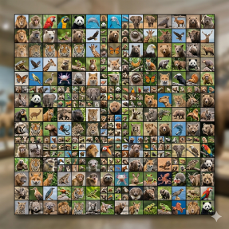

¿Qué son los animales?
Los animales son seres vivos que forman parte del reino Animalia. Se caracterizan por alimentarse de otros seres vivos, respirar oxígeno y tener la capacidad de moverse en alguna etapa de su vida. Existen millones de especies distribuidas por todo el planeta.
Características de los animales
- Son seres vivos multicelulares.
- Necesitan alimentarse para obtener energía.
- Respiran oxígeno.
- Crecen y se desarrollan.
- Se reproducen para mantener su especie.
- Responden a estímulos del entorno.
Clasificación de los animales
Los animales se clasifican principalmente en dos grandes grupos:
Vertebrados: Son los animales que tienen columna vertebral y esqueleto interno.
- Mamíferos: perro, gato, elefante y ballena.
- Aves: águila, loro y pingüino.
- Reptiles: serpiente, tortuga y cocodrilo.
- Anfibios: rana y salamandra.
- Peces: tiburón, atún y pez payaso.
Invertebrados: Son los animales que no tienen columna vertebral.
- Insectos: mariposa, abeja y hormiga.
- Arácnidos: araña y escorpión.
- Moluscos: pulpo, calamar y caracol.
- Crustáceos: cangrejo y camarón.
- Equinodermos: estrella de mar y erizo de mar.
Alimentación
Los animales pueden ser:
- Hervíboros:comen plantas.
- Carnívoros:comen otros animales.
- Omnívoros:comen plantas y animales.
Importancia de los animales
Los animales son fundamentales para la vida en la Tierra porque ayudan a mantener el equilibrio de los ecosistemas. Muchas especies participan en la polinización de las plantas, la dispersión de semillas y el control de poblaciones de otros animales.
Además, forman parte de las cadenas alimenticias, proporcionando alimento a otras especies y contribuyendo al funcionamiento de la naturaleza. Algunos animales también ayudan al ser humano en actividades como la agricultura, el transporte, la compañía y la investigación científica.
Proteger a los animales es importante para conservar la biodiversidad y garantizar un ambiente saludable para las futuras generaciones.
